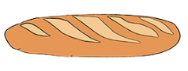

Cuestionario: hábitos saludables y alimentación
Responde a estas 15 preguntas y demuestra cuánto sabes sobre hábitos saludables, alimentación y cuidado del cuerpo.

Responde a estas 15 preguntas y demuestra cuánto sabes sobre hábitos saludables, alimentación y cuidado del cuerpo.
